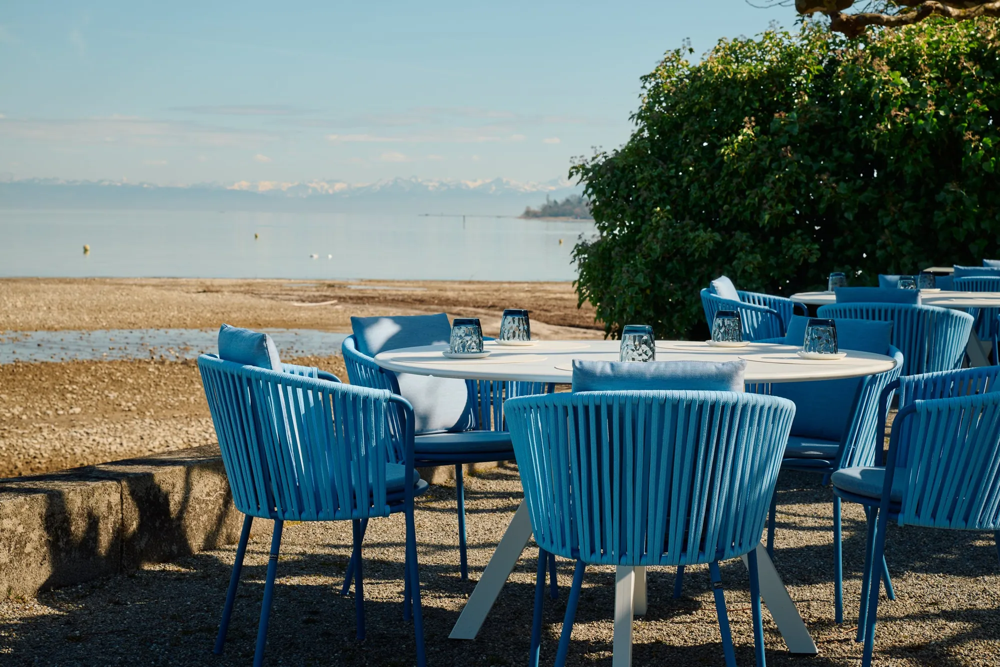
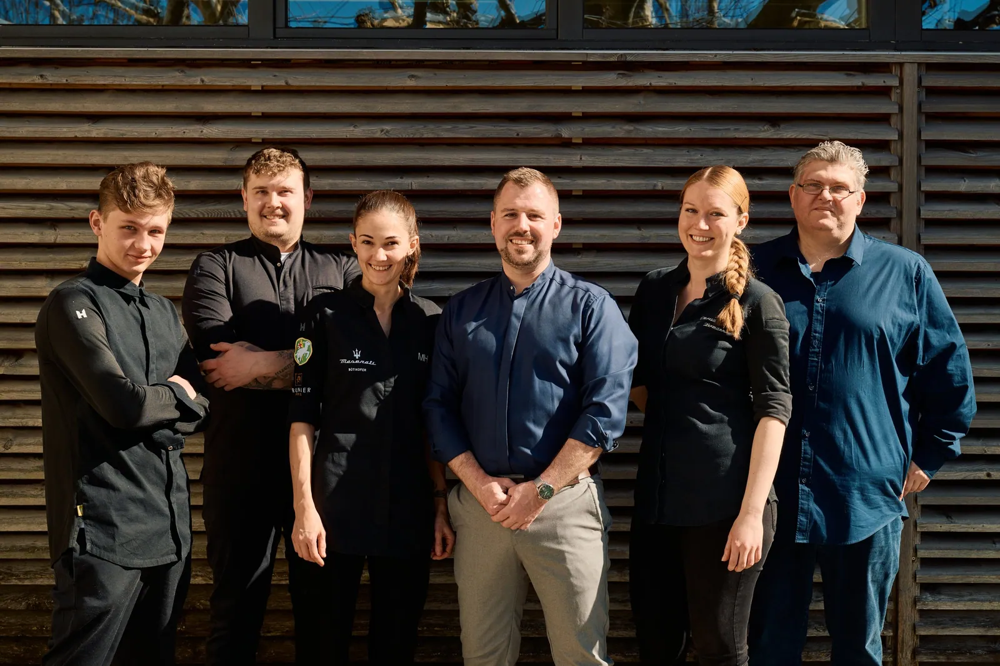
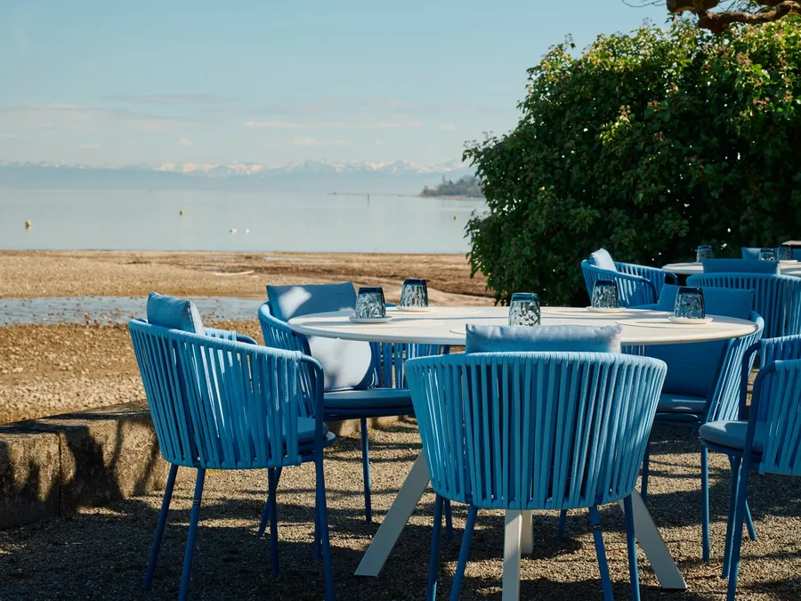
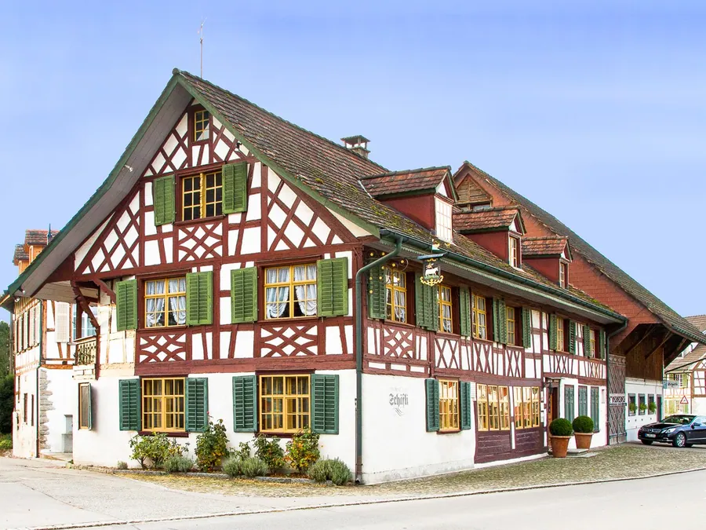
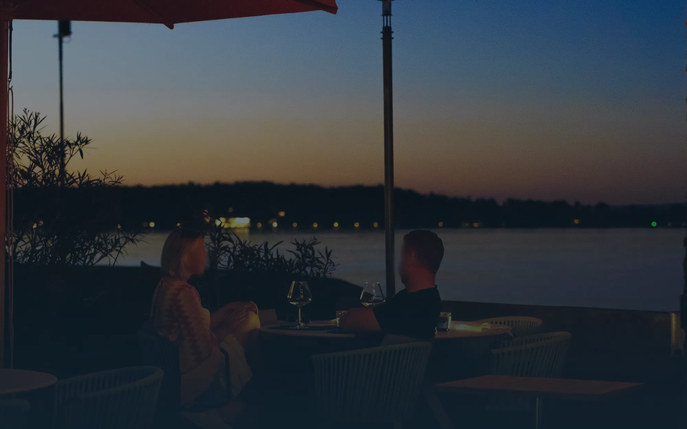

02Späher · Befund
Entdeckung des Jahres,eine Seite aus der Vorlage.
Wirtschaft am Schlössli im Hafen von Bottighofen, 15 Punkte GaultMillau, Küche Monika Huber, Schwesterhaus der Taverne zum Schäfli. Hier steht, wie die heutige Seite dasteht, wer dahintersteht, was fehlt, was das Haus ausmacht und ob es passt. Jede Angabe mit Quelle, Stand 18. Oktober 2026.
01Das Haus in Kürze
Ein Restaurant am Hafen,kein Kettenhaus.
Betreiberin ist die CK Gastro Consulting GmbH in Wigoltingen; Christian Kuchler hält 199 von 200 Stammanteilen. Seit der Neueröffnung 2025 kocht hier Monika Huber, früher seine Sous-Chefin im Schäfli.
| Angabe | Wert | Quelle |
|---|---|---|
| Art | Restaurant, mediterrane und französische Küche, Preisklasse €€€, keine Zimmer | Startseite; Michelin, 18.10.2026 |
| Lage | Seestrasse 50, 8598 Bottighofen, direkt im Hafen, Blick auf See und Alpen | Startseite, Kontakt |
| Küche · Gastgeber | Monika Huber, Küchenchefin · Jonas Volpert, Gastgeber und Sommelier | Startseite, Über uns |
| Betreiberin | CK Gastro Consulting GmbH, CHE-139.373.932, eingetragen 04.05.2021, Zweck «Beratung im Gastronomiebereich» | Impressum; SHAB über Zefix, 18.10.2026 |
| Gesellschafter | Christian Kuchler (Vorsitz, 199 Anteile), Ramona Gubler (Geschäftsführerin, 1 Anteil) | SHAB 04.05.2021 |
| Urheberrechte | laut Impressum bei der Taverne zum Schäfli AG | Impressum |
| Geöffnet | Donnerstag bis Montag 11:30 bis 23:00, Küche 11:30 bis 13:30 und 18:00 bis 20:00; Dienstag und Mittwoch Ruhetag | Kontakt, 18.10.2026 |
| Eröffnet | Neueröffnung April 2025; davor «Strandwirtschaft Schlössli» eines anderen Teams | Web-Archiv 08.12.2024, 08.09.2024 |
| Alter des Gebäudes | offen · Wanderführer nennen das 17. Jahrhundert, die Seite sagt nichts | Station 3 |
02Wer hinter der heutigen Seite steht
Keine Agentur,ein Abo bei Squarespace.
Weder Fuss noch Impressum noch Quelltext nennen eine Agentur. Die Seite läuft auf dem Baukasten Squarespace, Vorlage 7.1, wie die des Schäfli. Wer sie gebaut hat und pflegt, ist von aussen nicht zu sehen.
- AnbieterServer-Antwort server: Squarespace, Vorlage templateId 5c5a519771c10ba3470d8101 · 7.1. Agentur: offen.
- GebautKennung der Seite mit Zeitstempel 12.09.2024, Instagram verknüpft am 03.10.2024, Gutschein-Formular am 06.12.2024. Im Web-Archiv am 08.12.2024 zuerst mit «Neueröffnung April 2025».
- Zuletzt geändertEvents 24.09.2026 (Sitemap), Weinkarte 14.10.2026, Lunch-Menü «Lunch_261015» (Dateinamen).
- VorherBis Herbst 2024 die «Strandwirtschaft Schlössli» auf einer Seite von gastronovi, anderes Team.
- Pakete und PreiseAbos «Basic», «Core», «Advanced», jährlich oder monatlich. Von hier aus nur in Baht zu sehen; Preis in Franken und Abo des Hauses: offen.
- LaufzeitSquarespace-Bedingungen ab 27.03.2025: läuft, bis gekündigt wird, verlängert sich automatisch, kündbar jederzeit, Rückerstattung in der Regel nicht.
- NutzungsrechteInhalte bleiben beim Haus, Vorlage und Plattform gehören Squarespace, Squarespace hat eine dauerhafte Lizenz an den Inhalten. Export nur als WordPress-Datei, Bilder darin als Verweise, Events, Gestaltung und CSS gehen nicht mit.
- AdresseNamensserver ns14.net, Mail bei Google; bei wem die Adresse registriert ist: offen.
- Vertrag des Hausesungeprüft, im Gespräch zu klären.
Wo wir besser sind
- Erzählung statt Vorlage: Schlössli, Hafen, Platanen, Monika Hubers Weg an den See
- 15 Punkte und «Entdeckung des Jahres» dort, wo der Gast landet
- Karten als Seite aus einer Quelle statt sieben PDFs
- Bankette, Events und Gutschein mit eigenem Weg statt Mail-Programm und Handversand
- Am Handy Reservation im ersten Bildschirm
Was dem Haus bleibt
- Die neue Seite gehört dem Haus ganz: Code, Bilder, Adresse, Zugänge
- Die Reservation bei gastronovi bleibt, wie sie ist
- Kein Vertrag mit Mindestlaufzeit im Weg, laut den öffentlichen Bedingungen jederzeit kündbar
- Zwei Häuser als Familie, jedes mit eigener Welt

Das kann die heutige Seite: Ihr Startbild zeigt sofort, wo man sitzt. Darunter wird sie zur Vorlage mit Mint-Grund und kleinen Kacheln.
03Die heutige Seite
Jung und gepflegt,aber ohne Geschichte.
Fünf Seiten in der Leiste, fünfzehn in der Sitemap. Startbild über die ganze Breite, darunter Text, Bildpaare und acht Gerichte als kleine Kacheln. Im Fuss die Siegel von GaultMillau und Michelin.
| Punkt | Stand | Beleg |
|---|---|---|
| Technik | Squarespace 7.1, Schriften Gilda Display und PT Serif, Grund Mint #d8fffc, Knöpfe Nachtblau #213c4f | Quelltext; Aufnahme gemessen |
| Seiten | Home, Karten, Events & Termine, Über uns, Kontakt; doppelte Startseite /home-1, «Impressionen» nur in der Sitemap, Adressen aus der Vorlage | sitemap.xml, 18.10.2026 |
| Bilder | 40 eigene Bilder, Originale bis 5504 × 8256 px aus Fotoserien August 2025 und Mai 2026; Gerichte auf der Startseite als Kacheln mit 223 px, letzte Reihe halb leer | Quelltext, Aufnahme 1440 px |
| Handy | eigene Fassung, nichts läuft über; erster Bildschirm nur Foto und Name, Reservation erst nach dem Wischen | Aufnahme 390 px |
| Gewicht | Startseite rund 2,6 MB am Rechner, 1,7 MB am Handy; Ladezeiten von Thailand aus nur Arbeitswert | _qa/spaeher/messung.json |
| Sprachen | nur Deutsch; «Genießen» mit ß, Cookie-Fenster in Du-Form | Quelltext |
| Buchung | Reservation über gastronovi (Restaurant 118851) auf Startseite und Kontakt; Bankett und Event-Plätze per Mail-Link | Startseite, Karten, Events |
| Gutschein | Formular mit Name, E-Mail, Adresse, Betrag, ohne Bezahlung, Versand von Hand | Quelltext Startseite |
| Rechtstexte | Impressum ja · Datenschutz ja, nennt Google Analytics, nicht Squarespace und gastronovi · AGB ja (April 2025) · Widerruf keiner gefunden | /impressum, /datenschutzerklarung, /agbs |
| Newsletter · Social | kein Newsletter sichtbar (Baustein im Quelltext nicht eingerichtet) · Instagram @schloessli_bottighofen verknüpft, im Fuss nicht zu sehen | Quelltext /kontakt |
| Karten | Speisekarte Oktober, Weinkarte 14.10.2026, Lunch, Lästermeile, Bankett: alle als PDF | Seite Karten |
Was sie gut macht: Das Startbild trägt, die Fotos sind professionell und gross vorhanden. Karten, Lunch, Events und Ferien sind aktuell, das Team pflegt die Seite sichtbar. Reservieren geht mit einem Klick, das Cookie-Fenster lässt ablehnen. Eine junge, saubere Seite, keine alte.
04Was fehlt
Was der Gastnicht erfährt.
Alles davon steht schon irgendwo: bei GaultMillau, in Event-Texten, in den PDFs. Nur nicht dort, wo der Gast landet.
- Die Auszeichnung«Entdeckung des Jahres 2026» fehlt auf der ganzen Seite, der 15. Punkt steht nur als Siegel im Fuss.
- Die GeschichteKein Satz zum Schlössli, zum Hafen, zu den Platanen, zur Neueröffnung, zum Schäfli. Monika Hubers Weg nur in Event-Texten.
- Die Karte als SeiteAlle Karten nur als PDF; die Seite «Karten» trägt als einzige Überschrift «Banketts & Gruppen».
- Wege ohne Mail-ProgrammBankettanfrage und Event-Reservation öffnen das Mail-Programm, der Gutschein ist ein Formular ohne Bezahlung.
- HandyReservation nicht im ersten Bildschirm.
- TeamPatissière Theresa Hermann, die GaultMillau nennt, fehlt auf «Über uns».
- Sprachen und OrdnungKein Englisch; doppelte Startseite, versteckte «Impressionen», Adressen aus der Vorlage.
- DatenschutzNennt die genutzten Dienste Squarespace und gastronovi nicht.
05Was das Haus ausmacht
Die schönste Terrasseam Bodensee.
So nennt Christian Kuchler sie auf der Startseite. GaultMillau beschreibt die Terrasse im Schatten prächtiger Platanen. Hier kocht Monika Huber, früher bei Dieter Koschina in der Villa Joya und Sous-Chefin im Schäfli, ihre Reise durch das Mittelmeer; GaultMillau kürte sie zur Entdeckung des Jahres 2026.
- Gastgeber und KellerJonas Volpert, Sommelier. GaultMillau: auf den Weinkeller «dürfte manches Fine-Dining-Restaurant neidisch sein».
- Seine LeuteEin «Ehemaligen Lunch» holte die Weggefährten aus dem Schäfli an den See; das Team fährt geschlossen auf die Gourmetkreuzfahrt mit Koschina.
- Zimmerkeine.
- AnlässeBanketts und Gruppen auf zwei Etagen für je bis zu 26 Personen, Tavolata oder gesetztes Menü, Vorschläge als PDF.
- Seeterrasseja, mit eigenem Gewicht: Startbild, Kuchler-Zitat; Michelin führt das Haus als «Favorit der Inspektoren».
- DazuLunch-Menü, durchgehend die Karte der «Lästermeile», 4-Hands-Lunch, Gourmetkreuzfahrt 13. bis 15.11.2026, Gutscheine.

Auf der heutigen Seite stehen fünf Namen mit Rolle. Wer sie sind und woher sie kommen, erzählt sie nicht.
06Familie und weitere Häuser
Zwei Häuser,eine Handschrift von Kuchler.
Beide Seiten verweisen aufeinander, laufen auf demselben Baukasten und tragen denselben Wortlaut im Impressum. Sonst treten sie getrennt auf: eigene Firma, eigene Reservation, eigene Gutscheine. Gebaut hat Robert noch keines der beiden.

CK Gastro Consulting GmbH · 15 Punkte
Squarespace 7.1 · Reservation gastronovi · Mail Google

Taverne zum Schäfli AG · 18 Punkte
Squarespace 7.1, gleiche Vorlage · Reservation Zenchef · Mail Microsoft
Wie sie aufeinander verweisen
- Schlössli, Kontakt: Foto des Schäfli-Hauses und Plakette «2** Michelin 18 Punkte», verlinkt
- Schlössli, Events: «Kitchen Party im Schäfli» mit Link nach Wigoltingen, «Ehemaligen Lunch» mit den Weggefährten aus dem Schäfli
- Logo des Schlössli: «by Christian Kuchler»
- Schäfli, Kontakt: Logo des Schlössli, «Besuchen Sie auch unser Partner-Restaurant am Bodensee»
Gemeinsam und getrennt
- Gemeinsam: Squarespace mit derselben Vorlage, gleiches Impressum, Gutschein als Formular auf der Startseite
- Getrennt: GmbH gegen AG, gastronovi gegen Zenchef, je eigenes Gutschein-Formular, Google gegen Microsoft
- Gemeinsamer Gutschein oder gemeinsame Reservation: nicht zu sehen
- Urheberrechte der Schlössli-Seite laut Impressum bei der Taverne zum Schäfli AG
07Noten
Die Gästeund die Führer.
Abgelesen am 18. Oktober 2026, nur abgelesen. Die Auszeichnungen an der Quelle geprüft.
| Quelle | Note | Anzahl |
|---|---|---|
| Google Maps | 4,2 von 5 | 85 |
| TripAdvisor | Eintrag «Schlössli», Bottighofen: 3,1 von 5 · ob heutige Wirtschaft oder frühere Strandwirtschaft | 9 |
| Booking.com | betrifft nicht (Restaurant) | – |
| GaultMillau | 15 Punkte, «Entdeckung des Jahres 2026» | gaultmillau.ch, 18.10.2026 |
| Michelin | empfohlen, kein Stern, «Favorit der Inspektoren»; Plakette im Fuss sagt 2025 | guide.michelin.com, 18.10.2026 |
| Falstaff | Seite an der Quelle nicht lesbar | – |

08Empfehlung
Passt, als Studie, weil es zur Familie gehört. Mit einem Vorbehalt.
Schweizer Haus, inhabergeführt von Christian Kuchler, Schwesterhaus der Taverne zum Schäfli. Das Haus ist sichtbar stärker als seine Seite: Entdeckung des Jahres, 15 Punkte, Terrasse am Hafen, eine Küchenchefin mit Geschichte. Die Seite zeigt eine Vorlage, erzählt nichts davon und schickt Gäste für Karten in PDFs. Echtes Material ist da, kein Relaunch erkennbar.
Der Vorbehalt: Die Seite ist jung, seit der Neueröffnung 2025, und hat starke Fotos. Technik allein trägt nicht, unsere Seite muss über Erlebnis, Geschichte und Auszeichnung hinausgehen. Hinter ihr steht keine Agentur, nur das Squarespace-Abo, jederzeit kündbar. Die Reservation bei gastronovi kann bleiben.